감정평가사-1차-2교시 (2016-03-12 기출문제)
1과목: 감정평가관계법규
1. 국토의 계획 및 이용에 관한 법률에 규정된 도시ㆍ군관리계획에 해당하지 않는 것은?
- 용도지역ㆍ용도지구의 지정 또는 변경에 관한 계획
- 수산자원보호구역의 지정 또는 변경에 관한 계획
- 기반시설의 설치ㆍ정비 또는 개량에 관한 계획
- 도시자연공원구역의 행위제한에 관한 계획
- 입지규제최소구역의 지정 또는 변경에 관한 계획
(정답률: 알수없음)

2. 국토의 계획 및 이용에 관한 법령상 기반시설의 구분과 시설 종류의 연결이 옳지 않은 것은?
- 공간시설: 공원, 운동장
- 유통ㆍ공급시설: 유통업무설비, 방송ㆍ통신시설
- 보건위생시설: 화장시설, 도축장
- 환경기초시설: 하수도, 폐차장
- 방재시설: 하천, 유수지
(정답률: 알수없음)
3. 국토의 계획 및 이용에 관한 법령상 도시ㆍ군관리계획의 입안권자에 해당하지않는 자는? (단, 조례는 고려하지 않음)
- 시장
- 군수
- 구청장
- 특별자치시장
- 특별자치도지사
(정답률: 알수없음)
4. 국토의 계획 및 이용에 관한 법령상 용도구역의 종류이다. 시ㆍ도지사가 지정할 수 있는 용도구역을 모두 고른 것은? (단, 구역면적의 변경은 제외함)
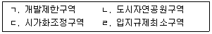
- ㄱ, ㄹ
- ㄴ, ㄷ
- ㄷ, ㄹ
- ㄱ, ㄴ, ㄷ
- ㄴ, ㄷ, ㄹ
(정답률: 알수없음)
5. 국토의 계획 및 이용에 관한 법령상 도시ㆍ군기본계획을 수립하지 않을 수 있는 지방자치단체는? (단, 수도권은「수도권정비계획법」상의 수도권을 의미함)
- 수도권에 속하는 인구 10만명 이하인 군
- 수도권에서 광역시ㆍ특별시와 경계를 같이하는 인구 10만명 이하인 시
- 수도권외 지역에서 광역시와 경계를 같이하지 아니하는 인구 10만명 이하인 시
- 관할구역 일부에 대하여 광역도시계획이 수립되어 있는 시로서 광역도시계획에 도시ㆍ군기본계획의 내용이 모두 포함되어 있는 시
- 관할구역 전부에 대하여 광역도시계획이 수립되어 있는 군으로서 광역도시계획에 도시ㆍ군기본계획의 내용이 일부 포함되어 있는 군
(정답률: 알수없음)
6. 국토의 계획 및 이용에 관한 법령상 도시ㆍ군계획시설 부지의 매수 청구에 관한 설명으로 옳지 않은 것은?
- 매수청구대상에는 도시ㆍ군계획시설의 부지로 되어 있는 토지 중 지목이 잡종지인 토지는 포함되지 않는다.
- 부재부동산 소유자의 토지로서 매수대금이 2,000만원을 초과하는 경우 매수의무자는 도시ㆍ군계획시설채권을 발행하여 지급할 수 있다.
- 도시ㆍ군계획시설사업의 시행자가 정하여진 경우 매수대상인 토지의 소유자는 시행자에게 그 토지의 매수를 청구할 수 있다.
- 도시ㆍ군계획시설채권의 상환기간은 10년 이내로 한다.
- 매수의무자가 매수하기로 결정한 토지는 매수 결정을 알린 날부터 2년 이내에 매수하여야 한다.
(정답률: 알수없음)
7. 국토의 계획 및 이용에 관한 법령상 지구단위계획에 관한 설명으로 옳은 것은?
- 지구단위계획은 도시ㆍ군기본계획으로 결정한다.
- 지구단위계획의 수립기준 등은 시ㆍ도지사가 정한다.
- 지구단위계획구역은 계획관리지역에 한하여 지정할 수 있다.
- 계획관리지역 내에 지정하는 지구단위계획구역에 대해서는 당해 지역에 적용되는 건폐율의 200퍼센트 및 용적률의 150퍼센트 이내에서 완화하여 적용할 수 있다.
- 용도지역을 변경하는 지구단위계획에는 건축물의 용도제한이 반드시 포함되어야 한다.
(정답률: 알수없음)
8. 국토의 계획 및 이용에 관한 법령상 개발밀도관리구역에 관한 설명으로 옳지 않은 것은?
- 주거ㆍ상업 또는 공업지역에서의 개발행위로 기반시설의 처리능력이 부족할 것이 예상되는 지역 중 기반시설의 설치가 곤란한 지역을 개발밀도관리구역으로 지정할 수 있다.
- 개발밀도관리구역을 지정할 때 개발밀도관리구역에서는 당해 용도지역에 적용되는 건폐율 또는 용적률을 강화하여 적용한다.
- 개발밀도관리구역을 지정하기 위해서는 지방도시계획위원회의 심의를 거쳐야 한다.
- 개발밀도관리구역의 경계는 특색 있는 지형지물을 이용하는 등 경계선이 분명하게 구분되도록 하여야 한다.
- 개발밀도관리구역의 지정기준을 정할 때 고려되는 기반시설에 학교는 포함되지 않는다.
(정답률: 알수없음)
9. 국토의 계획 및 이용에 관한 법령상 용도지역 미세분 지역에 관한 설명이다. 다음 ( )안의 내용이 옳게 연결된 것은?
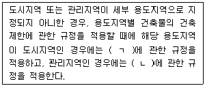
- ㄱ: 생산녹지지역, ㄴ: 보전관리지역
- ㄱ: 생산녹지지역, ㄴ: 자연환경보전지역
- ㄱ: 보전녹지지역, ㄴ: 보전관리지역
- ㄱ: 보전녹지지역, ㄴ: 자연환경보전지역
- ㄱ: 자연환경보전지역, ㄴ: 자연환경보전지역
(정답률: 알수없음)
10. 국토의 계획 및 이용에 관한 법령상 토지거래계약에 관한 허가구역 내에서 법인 아닌 사인(私人)간에 토지를 매매하는 경우 허가를 요하지 않는 토지의 면적 기준으로 옳지 않은 것은? (단, 국토교통부장관 또는 시ㆍ도지사가 기준면적을 따로 정하여 공고하는 경우를 제외함)
- 주거지역: 180제곱미터 이하
- 공업지역: 660제곱미터 이하
- 녹지지역: 100제곱미터 이하
- 상업지역: 330제곱미터 이하
- 도시지역안에서 용도지역의 지정이 없는 구역: 90제곱미터 이하
(정답률: 알수없음)
11. 국토의 계획 및 이용에 관한 법령상 아파트를 건축할 수 있는 용도지역은?
- 준주거지역
- 일반공업지역
- 유통상업지역
- 계획관리지역
- 제1종 일반주거지역
(정답률: 알수없음)
12. 국토의 계획 및 이용에 관한 법령상 토지거래계약에 관한 허가신청이 있는 경우의 선매 및 매수청구에 관한 설명으로 옳지 않은 것은?
- 시장ㆍ군수 또는 구청장은 선매자와 토지소유자 간의 선매협의가 이루어지지 아니한 경우에는 토지수용위원회에 재결을 신청하여야 한다.
- 선매자로 지정된 자는 매수가격 등 선매조건을 기재한 서면을 그 지정일부터 15일 이내에 토지소유자에게 통지하여 선매협의를 하여야 한다.
- 선매자가 토지를 매수할 때의 가격은 토지거래계약 허가신청서에 적힌 가격이「부동산가격공시 및 감정평가에 관한 법률」에 따라 감정평가업자가 감정평가한 감정가격보다 높은 경우 감정가격을 기준으로 한다.
- 토지거래 불허가처분을 이유로 매수청구를 하는 자는 토지매수청구서를 시장ㆍ군수 또는 구청장에게 제출하여야 한다.
- 토지거래 불허가처분을 받은 자는 그 통지를 받은 날부터 1개월 이내에 시장ㆍ군수 또는 구청장에게 해당 토지에 관한 권리의 매수를 청구할 수 있다.
(정답률: 알수없음)
13. 국토의 계획 및 이용에 관한 법령상 토지에의 출입 등에 관한 설명으로 옳은 것은?
- 도시ㆍ군계획에 관한 기초조사를 위해 타인의 토지에 출입하는 행위로 인하여 손실을 입은 자가 있으면, 그 행위자가 손실을 보상하여야 한다.
- 도시ㆍ군계획시설사업에 관한 조사를 위하여 필요한 경우 행정청인 도시계획시설사업의 시행자는 허가 없이 타인의 토지에 출입할 수 있다.
- 도시ㆍ군계획시설사업에 관한 조사를 위하여 타인의 토지에 출입하려는 자는 시ㆍ도지사의 허가를 받아야 하며, 토지의 소유자ㆍ점유자 또는 관리인의 동의를 받아야 한다.
- 도시ㆍ군계획시설사업의 시행자는 타인의 토지를 임시통로로 일시사용하는 경우 토지의 소유자ㆍ점유자 또는 관리인의 동의를 받을 필요가 없다.
- 일출 전이나 일몰 후에는 그 토지 점유자의 승낙여부와 관계없이 택지나 담장 또는 울타리로 둘러싸인 타인의 토지에 출입할 수 없다.
(정답률: 알수없음)
14. 부동산가격공시 및 감정평가에 관한 법령상 과징금에 관한 설명이다. 다음 ( )안에 알맞은 것은?
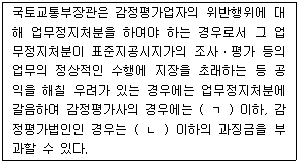
- ㄱ: 5천만원, ㄴ: 5억원
- ㄱ: 5천만원, ㄴ: 10억원
- ㄱ: 7천만원, ㄴ: 7억원
- ㄱ: 1억원, ㄴ: 5억원
- ㄱ: 1억원, ㄴ: 10억원
(정답률: 알수없음)
15. 부동산가격공시 및 감정평가에 관한 법령상 감정평가사가 될 수 있는 자는?
- 미성년자
- 파산선고를 받은 자로서 복권되지 아니한 자
- 금고 이상의 형의 집행유예를 받고 그 유예기간이 만료된 날부터 2년이 경과된 자
- 금고 이상의 형의 선고유예를 받고 그 선고유예기간 중에 있는 자
- 감정평가사 자격이 취소된 후 2년이 경과된 자
(정답률: 알수없음)
16. 부동산가격공시 및 감정평가에 관한 법령상 표준지공시지가의 공시사항에 포함되는 것을 모두 고른 것은?
- ㄱ, ㄴ
- ㄱ, ㄹ
- ㄱ, ㄴ, ㄷ
- ㄴ, ㄷ, ㄹ
- ㄱ, ㄴ, ㄷ, ㄹ
(정답률: 알수없음)
17. 부동산가격공시 및 감정평가에 관한 법령상 감정평가법인에 관한 설명으로 옳은 것을 모두 고른 것은?
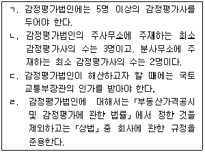
- ㄱ, ㄴ
- ㄱ, ㄷ
- ㄱ, ㄹ
- ㄴ, ㄷ
- ㄴ, ㄹ
(정답률: 알수없음)
18. 부동산가격공시 및 감정평가에 관한 법령상 중앙부동산평가위원회에 관한 설명으로 옳은 것은?
- 위원회는 위원장을 포함한 25명 이내의 위원으로 구성한다.
- 위원회의 위원 중 공무원은 9명 이내이어야 한다.
- 위원회의 위원장은 국토교통부장관이 된다.
- 위원회의 회의는 위원장이 이를 소집하고, 개회 3일 전에 의안을 첨부하여 각 위원에게 통지하여야 한다.
- 공무원이 아닌 위원의 임기는 2년으로 한다.
(정답률: 알수없음)
19. 부동산가격공시 및 감정평가에 관한 법령상 시장ㆍ군수가 개별공시지가를 정정할 수 있는 사유가 아닌 것은?
- 표준지 선정의 착오
- 개별공시지가를 결정ㆍ공시하기 위하여 개별토지가격을 산정한 때에 토지소유자의 의견청취절차를 거치지 아니한 경우
- 토지가격비준표의 적용에 오류가 있는 경우
- 용도지역 등 토지가격에 영향을 미치는 주요 요인의 조사를 잘못한 경우
- 토지가격이 전년대비 급격하게 상승한 경우
(정답률: 알수없음)
20. 국유재산법령상 일반재산에 관한 설명으로 옳지 않은 것은?
- 일반재산은 대부 또는 처분할 수 있다.
- 총괄청은 일반재산의 관리ㆍ처분에 관한 사무의 일부를 위탁받을 수 있다.
- 일반재산인 토지의 대장가격이 3천만원 이상인 경우 처분예정가격은 하나의 감정평가법인의 평가액으로 한다.
- 일반재산은 개척사업을 시행하기 위하여 그 사업의 완성을 조건으로 대부ㆍ매각 또는 양여를 예약할 수 있다.
- 대부계약의 갱신을 받으려는 자는 대부기간이 끝나기 1개월 전에 중앙관서의 장 등에 신청하여야 한다.
(정답률: 알수없음)
21. 국유재산법령상 지식재산에 관한 설명으로 옳지 않은 것은?
- 「디자인보호법」에 따라 등록된 디자인권은 지식재산에 해당한다.
- 중앙관서의 장등은 지식재산의 사용허가등을 하려는 경우에는 수의(隨意)의 방법으로 할 수 있다.
- 상표권의 사용허가등의 기간은 10년 이내로 한다.
- 중앙관서의 장등은「중소기업기본법」에 따른 중소기업의 수출증진을 위하여 필요하다고 인정하는 경우 지식재산의 사용허가에 따른 사용료를 면제할 수 있다.
- 저작권등의 사용허가등을 받은 자는 해당 지식재산을 관리하는 중앙관서의 장등의 승인을 받아 그 저작물을 변형할 수 있다.
(정답률: 알수없음)
22. 국유재산법령상 행정재산에 관한 설명으로 옳은 것을 모두 고른 것은?
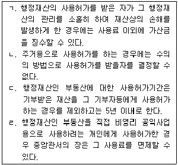
- ㄱ, ㄴ
- ㄱ, ㄷ
- ㄴ, ㄷ
- ㄴ, ㄹ
- ㄷ, ㄹ
(정답률: 알수없음)
23. 국유재산법령상 부동산인 행정재산의 사용료에 관한 설명으로 옳지 않은 것은?
- 경쟁입찰로 사용허가를 하는 경우 첫 해의 사용료는 최고입찰가로 결정한다.
- 사용료가 100만원을 초과하는 경우에 연 6회 이내에서 나누어 내게 할 수 있다.
- 사용료를 나누어 내게 할 때 연간 사용료가 1천만원 이상인 경우에는 그 허가를 받은 자에게 연간 사용료의 100분의 50에 해당하는 금액의 범위에서 보증금을 예치하게 하거나 이행보증조치를 하도록 하여야 한다.
- 중앙관서의 장은 행정재산을 공용으로 사용하려는 지방자치단체에 사용허가하는 경우 사용료를 면제하여야 한다.
- 보존용재산을 사용허가하는 경우에 재산의 유지ㆍ보존을 위하여 관리비가 특히 필요할 때에는 사용료에서 그 관리비 상당액을 뺀 나머지 금액을 징수할 수 있다.
(정답률: 알수없음)
24. 건축법령상 건축허가에 관한 설명으로 옳은 것은?
- 위락시설에 해당하는 건축물의 건축을 허가하는 경우 건축물의 용도ㆍ규모가 주거환경 등 주변 환경을 고려할 때 부적합하다고 인정되면 건축위원회의 심의를 거쳐 건축허가를 하지 않을 수 있다.
- 연면적의 합계가 10만 제곱미터 이상인 공장을 광역시에 건축하려면 광역시장의 허가를 받아야 한다.
- 고속도로 통행료 징수시설을 대수선하려는 자는 시장ㆍ군수ㆍ구청장의 허가를 받아야 한다.
- 허가권자는 건축허가를 받은 자가 허가를 받은 날부터 6개월 이내에 공사에 착수하지 아니한 경우 허가를 취소하여야 한다.
- 건축위원회의 심의를 받은 자가 심의 결과를 통지 받은 날부터 1년 이내에 건축 허가를 신청하지 아니하면 건축위원회 심의의 효력이 상실된다.
(정답률: 알수없음)
25. 건축법령상 용어에 관한 설명으로 옳지 않은 것은?
- '지하층'이란 건축물의 바닥이 지표면 아래에 있는 층으로서 바닥에서 지표면까지 평균높이가 해당 층 높이의 2분의 1 이상인 것을 말한다.
- 건축물을 이전하는 것은 '건축'에 해당하지 않는다.
- '리모델링'이란 건축물의 노후화를 억제하거나 기능 향상 등을 위하여 대수선하거나 일부 증축하는 행위를 말한다.
- 층수가 25층이며, 높이가 120미터인 건축물은 '고층건축물'에 해당한다.
- 피뢰침은 '건축설비'에 해당한다.
(정답률: 알수없음)
26. 건축법령상 위반 건축물 등에 대한 조치에 관한 설명으로 옳지 않은 것은?
- 허가권자는 건축물이 건축법령에 위반되는 경우 그 건축물의 현장관리인에게 공사의 중지를 명할 수 있다.
- 건축물이 용적률을 초과하여 건축된 경우 해당 건축물에 적용되는 시가표준액의 100분의 10에 해당하는 금액으로 이행강제금이 부과된다.
- 허가권자는 이행강제금을 부과하기 전에 이행강제금을 부과ㆍ징수한다는 뜻을 미리 문서로써 계고(戒告)하여야 한다.
- 허가권자는 이행강제금 부과처분을 받은 자가 이행강제금을 납부기한까지 내지 아니하면「지방세외수입금의 징수 등에 관한 법률」에 따라 징수한다.
- 허가권자는 시정명령을 받은 자가 이를 이행하면 새로운 이행강제금의 부과를 즉시 중지하되, 이미 부과된 이행강제금은 징수하여야 한다.
(정답률: 알수없음)
27. 건축법령상「행정대집행법」적용의 특례 사유로 규정되지 않은 것은?
- 어린이를 보호하기 위하여 필요하다고 인정되는 경우
- 재해가 발생할 위험이 절박한 경우
- 건축물의 구조 안전상 심각한 문제가 있어 붕괴 등 손괴의 위험이 예상되는 경우
- 허가권자의 공사중지명령을 받고도 불응하여 공사를 강행하는 경우
- 도로통행에 현저하게 지장을 주는 불법건축물인 경우
(정답률: 알수없음)
28. 공간정보의 구축 및 관리 등에 관한 법령상 지번의 구성과 부여방법에 관한설명으로 옳지 않은 것은?
- 지번은 북서에서 남동으로 순차적으로 부여하여야 한다.
- 토지소유자가 합병 전의 필지에 주거ㆍ사무실 등의 건축물이 있어서 그 건축물이 위치한 지번을 합병 후의 지번으로 신청한 경우에도 합병 대상 지번 중 선순위의 지번으로 부여하여야 한다.
- 분할의 경우에는 분할 후의 필지 중 주거ㆍ사무실 등의 건축물이 있는 필지에 대해서는 분할 전의 지번을 우선하여 부여하여야 한다.
- 지번은 아라비아숫자로 표기하되, 임야대장 및 임야도에 등록하는 토지의 지번은 숫자 앞에 "산"자를 붙인다.
- 신규등록 및 등록전환의 경우에 대상토지가 여러 필지로 되어 있는 경우에는 그 지번부여지역의 최종 본번의 다음 순번부터 본번으로 하여 순차적으로 지번을 부여할 수 있다.
(정답률: 알수없음)
29. 공간정보의 구축 및 관리 등에 관한 법령상 지적공부와 부동산등기부에 관한설명으로 옳지 않은 것은?
- 지적소관청은 지적공부의 등록사항중 지적도 및 임야도에 등록된 필지가 면적의 증감 없이 경계의 위치만 잘못된 경우를 발견하면 직권으로 조사ㆍ측량하여 정정할 수 있다.
- 지적소관청 소속 공무원이 지적공부와 부동산등기부의 부합 여부를 확인하기 위하여 등기사항증명서의 발급을 신청하는 경우 그 수수료를 감경할 수 있다.
- 행정구역의 명칭이 변경되었으면 지적공부에 등록된 토지의 소재는 새로운 행정구역의 명칭으로 변경된 것으로 본다.
- 지적공부에 신규등록하는 토지의 소유자에 관한 사항은 지적소관청이 직접 조사하여 등록한다.
- 「국유재산법」상 중앙관서의 장이 소유자 없는 부동산에 대한 소유자 등록을 신청하는 때에 지적소관청은 지적공부에 해당 토지의 소유자가 등록되지 아니한 경우에만 등록할 수 있다.
(정답률: 알수없음)
30. 공간정보의 구축 및 관리 등에 관한 법령상 지상 경계의 결정기준을 옳게 연결한 것을 모두 고른 것은?
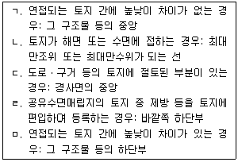
- ㄱ, ㄹ
- ㄷ, ㅁ
- ㄱ, ㄴ, ㄹ
- ㄱ, ㄴ, ㅁ
- ㄴ, ㄷ, ㄹ, ㅁ
(정답률: 알수없음)
31. 공간정보의 구축 및 관리 등에 관한 법령상 다음의 설명에 해당하는 지목은?
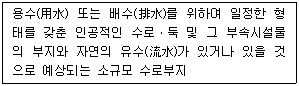
- 제방
- 유지
- 하천
- 광천지
- 구거
(정답률: 알수없음)
32. 부동산등기법령상 소유권 등기에 관한 설명으로 옳은 것은?
- 등기관이 소유권보존등기를 할 때에는 등기원인과 그 연월일을 기록하지 아니한다.
- 토지대장에 최초의 소유자로 등록되어 있는 자의 상속인은 소유권보존등기를 신청할 수 없다.
- 등기관이 직권으로 소유권보존등기를 할 수 있는 경우는 없다.
- 소유권의 일부이전등기를 할 때 이전되는 지분을 표시하지 않아도 된다.
- 소유권의 이전에 관한 사항은 등기기록의 을구에 기록한다.
(정답률: 알수없음)
33. 부동산등기법령상 등기절차에 관한 설명으로 옳지 않은 것은?
- 신탁재산에 속하는 부동산의 신탁등기는 수탁자가 단독으로 신청한다.
- 부동산표시의 변경등기는 소유권의 등기명의인이 단독으로 신청한다.
- 등기관이 등기의 착오가 등기관의 잘못으로 인한 것임을 발견한 경우 등기상 이해관계 있는 제3자가 없다면 지체 없이 그 등기를 직권으로 경정하여야 한다.
- 등기관은 등기권리자, 등기의무자 또는 등기명의인이 각 2인 이상인 경우에는 직권으로 경정등기를 한 사실을 그 모두에게 알려야 한다.
- 토지가 멸실된 경우에는 그 토지소유권의 등기명의인은 그 사실이 있는 때부터 1개월 이내에 그 등기를 신청하여야 한다.
(정답률: 알수없음)
34. 부동산등기법령상 보조기억장치에 저장하여 보존하는 경우 그 보존기간이 나머지 것과 다른 것은?
- 신탁원부
- 공동담보목록
- 도면
- 매매목록
- 신청정보 및 첨부정보
(정답률: 알수없음)
35. 부동산등기법령상 등기관의 처분에 대한 이의에 관한 설명으로 옳은 것은?
- 이의의 신청은「민사소송법」이 정하는 바에 따라 관할 지방법원에 이의신청서를 제출하는 방법으로 한다.
- 새로운 사실이나 새로운 증거방법을 근거로 이의신청을 할 수 있다.
- 등기관은 이의가 이유 있다고 인정하더라도 그에 해당하는 처분을 해서는 아니되고 관할 지방법원에 보내 그 결정에 따라야 한다.
- 이의에는 집행정지의 효력이 없다.
- 이의에 대한 관할 지방법원의 결정에 대해서는 불복할 수 없다.
(정답률: 알수없음)
36. 동산ㆍ채권 등의 담보에 관한 법령상 동산담보권에 관한 설명으로 옳지 않은 것은?
- 창고증권이 작성된 동산은 담보등기의 목적물이 될 수 없다.
- 담보권설정자의 상호등기가 말소된 경우에도 이미 설정된 동산담보권의 효력에는 영향을 미치지 아니한다.
- 동산담보권은 피담보채권과 분리하여 타인에게 양도할 수 없다.
- 담보권자는 채권의 일부를 변제받은 경우에도 담보목적물 전부에 대하여 그 권리를 행사할 수 있다.
- 동산담보권의 효력은 법률에 다른 규정이 없거나 설정행위에 다른 약정이 없다면 담보목적물의 종물에 미치지 않는다.
(정답률: 알수없음)
37. 도시 및 주거환경정비법령상 단독주택 및 다세대주택 등이 밀집한 지역에서 정비기반시설과 공동이용시설의 확충을 통하여 주거환경을 보전ㆍ정비ㆍ개량하기 위하여 시행하는 사업은?
- 주거환경개선사업
- 주택재개발사업
- 도시환경정비사업
- 주거환경관리사업
- 가로주택정비사업
(정답률: 알수없음)
38. 도시 및 주거환경정비법령상 정비구역 안에서 시장ㆍ군수의 허가를 받아야 하는 행위로 옳은 것만을 모두 고른 것은? (단, 재해복구 또는 재난수습에 필요한 응급조치를 위하여 하는 행위는 고려하지 않으며, 정비구역의 지정 및 고시 당시 이미 행위허가를 받았거나 받을 필요가 없는 행위는 제외함)
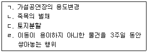
- ㄱ, ㄹ
- ㄷ, ㄹ
- ㄱ, ㄴ, ㄷ
- ㄱ, ㄷ, ㄹ
- ㄱ, ㄴ, ㄷ, ㄹ
(정답률: 알수없음)
39. 도시 및 주거환경정비법령상 토지등소유자로 구성된 조합이 시행할 수 없는 정비사업은?
- 가로주택정비사업
- 주택재건축사업
- 도시환경정비사업
- 주택재개발사업
- 주거환경개선사업
(정답률: 알수없음)
40. 도시 및 주거환경정비법령상 비용부담 등에 관한 설명으로 옳지 않은 것은?
- 시장ㆍ군수는 시장ㆍ군수가 아닌 사업시행자가 시행하는 정비사업의 정비계획에 따라 설치되는 도시ㆍ군계획시설 중 녹지에 대하여는 그 건설에 소요되는 비용의 전부 또는 일부를 부담할 수 있다.
- 시장ㆍ군수는 그가 시행하는 정비사업으로 인하여 현저한 이익을 받는 정비기반 시설의 관리자가 있는 경우에는 그 정비기반시설의 관리자와 협의하여 당해 정비사업비의 3분의 2까지를 그 관리자에게 부담시킬 수 있다.
- 시장ㆍ군수가 아닌 사업시행자는 부과금 또는 연체료를 체납하는 자가 있는 때에는 시장ㆍ군수에게 그 부과ㆍ징수를 위탁할 수 있다.
- 공동구에 수용될 전기ㆍ가스ㆍ수도의 공급시설과 전기통신시설 등의 관리자가 부담할 공동구의 설치에 소요되는 비용의 부담비율은 공동구의 점용예정면적비율에 의한다.
- 사업시행자가 정비사업비의 일부를 정비기반시설의 관리자에게 부담시키고자 하는 때에는 정비사업에 소요된 비용의 명세와 부담 금액을 명시하여 그 비용을 부담시키고자 하는 자에게 통지하여야 한다.
(정답률: 알수없음)
2과목: 회계학
41. 재무보고를 위한 개념체계 상 재무제표 요소의 정의 및 인식에 관한 설명으로 옳지 않은 것은?
- 이익의 측정과 직접 관련된 요소는 수익과 비용이다.
- 합리적인 추정을 할 수 없는 경우 해당 항목은 재무상태표나 포괄손익계산서에 인식될 수 없다.
- 자산이 갖는 미래경제적효익이란 직접으로 또는 간접으로 미래 현금 및 현금성 자산의 기업에의 유입에 기여하게 될 잠재력을 말한다.
- 미래경제적효익의 유입과 유출에 대한 불확실성 정도의 평가는 재무제표를 작성할 때 이용가능한 증거에 기초하여야 한다.
- 증여받은 재화는 관련된 지출이 없으므로 자산으로 인식할 수 없다.
(정답률: 알수없음)
42. (주)감평은 20×5년 초 액면금액 ￦1,000,000(액면이자율 연 4%, 매년 말 이자 지급, 만기 3년)의 전환사채를 발행하였다. 사채 액면금액 ￦3,000당 보통주(액면금액 ￦1,000) 1주로 전환할 수 있는 권리가 부여되어 있다. 만약 만기일까지 전환권이 행사되지 않을 경우 추가로 ￦198,600의 상환할증금을 지급한다. 이 사채는 액면금액인 ￦1,000,000에 발행되었으며 전환권이 없었다면 ￦949,213에 발행되었을 것이다(유효이자율 연 12%). 사채발행일 후 1년 된 시점인 20×6년 초에 액면금액의 60%에 해당하는 전환사채가 보통주로 전환 되었다. 이러한 전환으로 인해 증가할 주식발행초과금은? (단, 전환사채 발행시 인식한 전환권대가 중 전환된 부분은 주식발행초과금으로 대체하며, 단수 차이가 있으면 가장 근사치를 선택한다.)
- ￦413,871
- ￦433,871
- ￦444,071
- ￦444,343
- ￦464,658
(정답률: 알수없음)
43. 20×1년 초에 설립된 (주)감평은 사옥 건설을 위하여 현금 ￦95,000을 지급하고 건물(공정가치 ￦10,000)이 있는 토지(공정가치 ￦90,000)를 구입하였다. 건물을 철거하면서 철거비용 ￦16,000을 지불하였다. 20×1년 말과 20×2년 말 토지의 공정가치는 각각 ￦120,000과 ￦85,000이고, 재평가모형을 적용하고 있다. 20×2년 포괄손익계산서에 당기비용으로 인식할 토지재평가손실은?
- ￦2,500
- ￦18,000
- ￦21,000
- ￦26,000
- ￦35,000
(정답률: 알수없음)
44. (주)감평은 1주당 액면금액이 ￦1,000인 보통주 10,000주를 발행한 상태에서 20×6년 중 다음과 같은 자기주식 거래가 있었다. 회사는 재발행된 자기주식의 원가를 선입선출법으로 측정하며, 20×6년 9월 1일 현재 자기주식처분손실 ￦25,000이 있다.
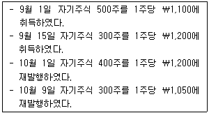
자기주식 거래 결과 20×6년 말 자기주식처분손익은?
- 자기주식처분이익 ￦15,000
- 자기주식처분손실 ￦15,000
- 자기주식처분이익 ￦20,000
- 자기주식처분손실 ￦20,000
- 자기주식처분손실 ￦25,000
(정답률: 알수없음)
45. 투자부동산의 계정대체와 평가에 관한 설명으로 옳지 않은 것은?
- 투자부동산을 원가모형으로 평가하는 경우에는 투자부동산, 자가사용부동산, 재고자산 사이에 대체가 발생할 때에 대체 전 자산의 장부금액을 승계한다.
- 자가사용부동산을 공정가치로 평가하는 투자부동산으로 대체하는 경우, 사용목적 변경시점까지 그 부동산을 감가상각하고 발생한 손상차손을 인식한다.
- 재고자산을 공정가치로 평가하는 투자부동산으로 대체하는 경우, 재고자산의 장부금액과 대체시점의 공정가치의 차액은 기타포괄손익으로 인식한다.
- 공정가치로 평가하게 될 자가건설 투자부동산의 건설이나 개발이 완료되면 해당일의 공정가치와 기존 장부금액의 차액은 당기손익으로 인식한다.
- 공정가치로 평가한 투자부동산을 자가사용부동산이나 재고자산으로 대체하는 경우, 후속적인 회계를 위한 간주원가는 사용목적 변경시점의 공정가치가 된다.
(정답률: 알수없음)
46. (주)감평의 20×2년 퇴직급여 관련 정보가 다음과 같을 때 이로 인해 20×2년도 기타포괄손익에 미치는 영향은? (단, 기여금의 출연과 퇴직금의 지급은 연도 말에 발생하였다고 가정한다.)
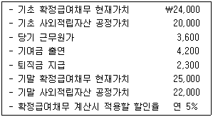
- ￦1,500 감소
- ￦900 감소
- ￦0
- ￦600 증가
- ￦2,400 증가
(정답률: 알수없음)
47. 무형자산에 관한 설명으로 옳지 않은 것은?
- 내부적으로 창출한 영업권은 자산으로 인식하지 않는다.
- 사업결합으로 인식하는 영업권은 사업결합에서 획득하였지만 개별적으로 식별하여 별도로 인식하는 것이 불가능한 그 밖의 자산에서 발생하는 미래경제적효익을 나타내는 자산이다.
- 무형자산을 창출하기 위한 내부 프로젝트를 연구단계와 개발단계로 구분할 수 없는 경우에는 그 프로젝트에서 발생한 지출은 모두 연구단계에서 발생한 것으로 본다.
- 자산에서 발생하는 미래경제적효익이 기업에 유입될 가능성이 높고 자산의 원가를 신뢰성 있게 측정할 수 있는 경우에만 무형자산을 인식한다.
- 경영자가 의도하는 방식으로 운용될 수 있으나 아직 사용하지 않고 있는 기간에 발생한 원가는 무형자산의 장부금액에 포함한다.
(정답률: 알수없음)
48. (주)감평은 20×1년 1월 1일에 공사계약(계약금액 ￦6,000)을 체결하였으며 20×3년 말에 완공될 예정이다. (주)감평은 진행기준에 따라 수익과 비용을 인식하며, 진행률은 추정총계약원가 대비 발생한 누적계약원가의 비율을 사용한다. 공사 관련 자료가 다음과 같을 때 20×2년의 공사계약손실은?
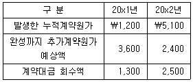
- ￦1,300
- ￦1,320
- ￦1,500
- ￦1,620
- ￦1,800
(정답률: 알수없음)
49. (주)감평은 기계장치를 (주)대한의 기계장치와 교환하였다. 교환시점에 두 회사가 소유하고 있던 기계장치의 장부금액과 공정가치는 다음과 같다.
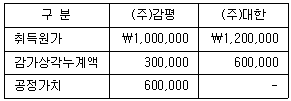
이 기계장치의 교환과 관련하여 (주)감평은 (주)대한으로부터 현금 ￦50,000을 추가로 수령하였다. (주)감평이 교환거래로 인식해야할 처분손익은? (단, 교환거래는 상업적 실질이 있다.)
- 처분이익 ￦50,000
- 처분손실 ￦50,000
- 처분이익 ￦100,000
- 처분손실 ￦100,000
- 처분손실 ￦150,000
(정답률: 알수없음)
50. (주)감평은 20×1년 1월 1일에 종업원 100명에게 각각 10개의 주식선택권을 부여하고 4년의 용역제공조건을 부과하였다. 부여시점의 주식선택권 공정가치는 개당 ￦10이다. (주)감평은 종업원 중 20명이 부여일로부터 4년 이내에 퇴사하여 주식선택권을 상실할 것으로 추정하였으나 20×1년 말까지 실제로 퇴사한 종업원은 없었다. 20×2년 말에는 가득기간 동안 30명이 퇴사할 것으로 추정을 변경하였으며 20×2년 말까지 실제 퇴사한 종업원은 없었다. 주식선택권의 부여와 관련하여 20×2년도에 인식할 보상비용은?
- ￦1,000
- ￦1,500
- ￦1,750
- ￦2,000
- ￦2,500
(정답률: 알수없음)
51. 재무제표 표시에 관한 설명으로 옳지 않은 것은?
- 계속기업의 가정이 적절한지의 여부를 평가할 때 경영진은 적어도 보고기간말로부터 향후 12개월 기간에 대하여 이용가능한 모든 정보를 고려한다.
- 기업이 재무상태표에 유동자산과 비유동자산, 그리고 유동부채와 비유동부채로 구분하여 표시하는 경우, 이연법인세자산(부채)은 유동자산(부채)으로 분류하지 아니한다.
- 매입채무 그리고 종업원 및 그 밖의 영업원가에 대한 미지급비용과 같은 유동부채는 기업의 정상영업주기 내에 사용되는 운전자본의 일부이다. 이러한 항목은 보고기간 후 12개월 후에 결제일이 도래한다 하더라도 유동부채로 분류한다.
- 보고기간 후 12개월 이내에 만기가 도래하는 경우에는, 기업이 기존의 대출계약 조건에 따라 보고기간 후 적어도 12개월 이상 부채를 차환하거나 연장할 것으로 기대하고 있고, 그런 재량권이 있다고 하더라도, 유동부채로 분류한다.
- 비용을 기능별로 분류하는 기업은 감가상각비, 기타 상각비와 종업원급여비용을 포함하여 비용의 성격에 대한 추가 정보를 공시한다.
(정답률: 알수없음)
52. 다음은 (주)감평의 20×2년도 비교재무상태표의 일부분이다. (주)감평의 20×2년도 매출채권평균회수기간이 73일이고 재고자산회전율이 3회일 때 20×2년도 매출총이익은? (단, 재고자산회전율 계산시 매출원가를 사용하고, 평균재고자산과 평균매출채권은 기초와 기말의 평균값을 이용하며, 1년은 365일로 계산한다.)
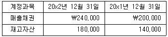
- ￦460,000
- ￦580,000
- ￦620,000
- ￦660,000
- ￦780,000
(정답률: 알수없음)
53. (주)감평은 20×1년 1월 1일 액면금액이 ￦1,000,000이고, 표시이자율 연10%(이자는 매년 말 지급), 만기 3년인 사채를 시장이자율 연 8%로 발행하였다. (주)감평이 20×2년 1월 1일 동 사채를 ￦1,100,000에 조기상환할 경우, 사채의 조기상환손익은? (단, 단수차이가 있으면 가장 근사치를 선택한다.)
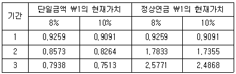
- ￦64,369 손실
- ￦64,369 이익
- ￦134,732 손실
- ￦134,732 이익
- ￦0
(정답률: 알수없음)
54. (주)감평은 (주)대한리스회사와 20×1년 1월 1일 공정가치 ￦2,500,000의 기계장치에 대한 금융리스계약을 체결하였다. 리스기간은 3년이고 리스기간 종료시 리스자산을 반환한다. 리스료는 매년 말 ￦1,000,000을 지급하며, 리스기간 종료시 예상잔존가치 ￦200,000 중 ￦100,000을 보증하기로 하였다. 리스기간 개시일에 (주)감평이 인식하여야 할 금융리스부채는? (단, 동 금융리스에 적용되는 내재이자율은 연 8%이고, 단일금액 ￦1의 현가계수(3년, 8%)와 정상연금 ￦1의 현가계수(3년, 8%)는 각각 0.7938과 2.5771이다.)
- ￦2,300,000
- ￦2,413,680
- ￦2,500,000
- ￦2,577,100
- ￦2,656,480
(정답률: 알수없음)
55. (주)감평은 20×1년 기말재고자산을 ￦50,000만큼 과소계상하였고, 20×2년 기말재고자산을 ￦30,000만큼 과대계상하였음을 20×2년 말 장부마감 전에 발견 하였다. 20×2년 오류수정 전 당기순이익이 ￦200,000이라면, 오류수정 후 당기순이익은?
- ￦120,000
- ￦170,000
- ￦230,000
- ￦250,000
- ￦280,000
(정답률: 알수없음)
56. (주)감평은 재화의 생산을 위하여 기계장치를 취득하였으며, 관련 자료는 다음과 같다. 동 기계장치의 취득원가는?
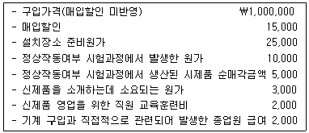
- ￦1,015,000
- ￦1,017,000
- ￦1,020,000
- ￦1,022,000
- ￦1,027,000
(정답률: 알수없음)
57. 수익에 관한 설명으로 옳지 않은 것은?
- 용역제공거래의 성과를 신뢰성 있게 추정할 수 없는 경우에는 인식된 비용의 회수가능한 범위 내에서의 금액만을 수익으로 인식한다.
- 제품판매가격에 제품판매 후 제공할 용역에 대한 식별가능한 대가가 포함되어 있는 경우에는, 그 금액을 이연하여 용역수행기간에 걸쳐 수익으로 인식한다.
- 재화를 판매하고 동시에 당해 재화를 나중에 재구매하기로 하는 별도의 약정을 체결함으로써 판매거래의 실질적 효과가 상쇄되는 경우에는 두 개의 거래를 하나의 거래로 보아 회계처리한다.
- 판매대금의 회수가 구매자의 재판매에 의해 결정되는 경우에는 판매자가 소유에 따른 유의적인 위험을 부담하는 경우에 해당하므로, 당해 거래를 판매로 보지 아니하여 수익을 인식하지 아니한다.
- 수익은 기업이 받았거나 받을 경제적효익의 총유입을 의미하므로, 기업이 받는 판매세, 특정재화나 용역과 관련된 세금, 부가가치세 금액도 수익에 포함된다.
(정답률: 알수없음)
58. 공정가치 측정에 관한 설명으로 옳지 않은 것은?
- 공정가치 측정은 자산을 매도하거나 부채를 이전하는 거래가 주된 시장이나 가장 유리한 시장(주된 시장이 없는 경우)에서 이루어지는 것으로 가정한다.
- 부채의 공정가치는 불이행위험의 효과를 반영한다.
- 자산이나 부채의 공정가치를 측정하기 위하여 사용되는 주된 시장의 가격에서 거래원가는 조정한다.
- 요구불 특성을 가진 금융부채(예: 요구불예금)의 공정가치는 요구하면 지급요구가 가능한 최초일부터 할인한 금액 이상이어야 한다.
- 자산이나 부채의 공정가치는 자산을 매도하면서 수취하거나 부채를 이전하면서 지급하게 될 가격(유출가격)이다.
(정답률: 알수없음)
59. 다음은 각각 독립적인 사건으로, '재무제표에 인식된 금액의 수정을 요하는 보고기간후사건'에 해당하는 것을 모두 고른 것은?
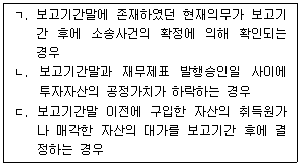
- ㄱ
- ㄴ
- ㄴ, ㄷ
- ㄱ, ㄷ
- ㄱ, ㄴ, ㄷ
(정답률: 알수없음)
60. 20×6년 1월 1일 (주)감평은 건물과 토지를 ￦2,000,000에 일괄구입하였다. 구입당시 건물과 토지의 공정가치는 각각 ￦960,000과 ￦1,440,000이었다. 건물의 내용연수는 7년, 잔존가치는 ￦100,000으로 추정하였으며 정액법으로 감가상각한다. 20×6년 12월 31일 건물과 토지에 관한 순공정가치와 사용가치는 다음과 같으며 회수가능액과 장부금액의 차이는 중요하고 손상징후가 있다고 판단된다.
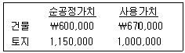
(주)감평이 20×6년도에 인식해야 할 손상차손은?
- ￦0
- ￦80,000
- ￦130,000
- ￦230,000
- ￦300,000
(정답률: 알수없음)
61. (주)감평은 20×6년 1월 1일 본사 건물을 새로 마련하기 위한 공사계약을 체결하였다. 본 건물은 적격자산에 해당되며 차입원가 자본화와 관련된 내용은 다음과 같다. 그림참조c-1 20×6년 12월 31일 재무상태표에 계상되는 건물의 취득원가는? (단, 계산시 월할계산하며 단수차이가 있으면 가장 근사치를 선택한다.)
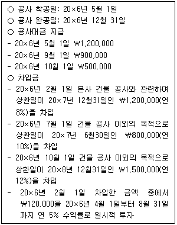
- ￦2,671,214
- ￦2,685,613
- ￦2,697,000
- ￦2,702,123
- ￦2,713,000
(정답률: 알수없음)
62. (주)감평의 20×6년 말 법인세와 관련된 자료는 다음과 같으며 차감할 일시적 차이의 실현가능성은 거의 확실하다.
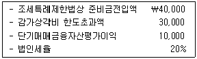
(주)감평의 20×6년 말 이연법인세자산과 이연법인세부채 금액은? (단, 이연법인세자산과 이연법인세부채는 상계하지 않으며, 법인세율은 변하지 않는다고 가정한다.)(차례대로 이연법인세자산, 이연법인세부채)
- ￦4,000, ￦6,000
- ￦6,000, ￦10,000
- ￦8,000, ￦12,000
- ￦10,000, ￦10,000
- ￦10,000, ￦6,000
(정답률: 알수없음)
63. (주)감평은 20×6년 10월 1일 전환사채권자의 전환권 행사로 1,000주의 보통주를 발행하였다. 20×6년 말 주당이익 관련 자료가 다음과 같을 때 20×6년도 기본주당이익과 희석주당이익은? (단, 유통보통주식수 계산시 월할계산하며 전환간주일 개념은 적용하지 않는다.)
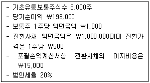
(차례대로 기본주당이익, 희석주당이익)
- ￦24, ￦22
- ￦24, ￦21
- ￦24, ￦20
- ￦25, ￦21
- ￦25, ￦22
(정답률: 알수없음)
64. 일반목적재무보고의 목적에 관한 설명으로 옳지 않은 것은?
- 현재 및 잠재적 투자자, 대여자 및 기타 채권자가 기업에 자원을 제공하는 것에 대한 의사결정을 할 때 유용한 보고기업 재무정보를 제공하는 것이다.
- 지분상품 및 채무상품을 매수, 매도 또는 보유하는 것에 대한 현재 및 잠재적 투자자의 의사결정은 그 금융상품 투자에서 그들이 기대하는 수익, 예를 들어, 배당, 원금 및 이자의 지급 또는 시장가격의 상승에 의존한다.
- 경영진의 책임 이행에 대한 정보는 경영진의 행동에 대해 의결권을 가지거나 다른 방법으로 영향력을 행사하는 현재 투자자, 대여자 및 기타 채권자의 의사결정에도 유용하다.
- 일반목적재무보고서는 보고기업의 가치를 보여주기 위해 고안된 것이다. 따라서 그 보고서는 현재 및 잠재적인 정보이용자가 보고기업의 가치를 추정하는데 도움이 되는 정보를 제공한다.
- 보고기업의 경영진도 해당 기업에 대한 재무정보에 관심이 있다. 그러나 경영진은 그들이 필요로 하는 재무정보를 내부에서 구할 수 있기 때문에 일반목적재무보고서에 의존할 필요가 없다.
(정답률: 알수없음)
65. (주)감평은 20×1년 초에 해양구조물을 ￦4,000,000(내용연수 5년, 잔존가치 없음, 정액법 상각)에 취득하여 사용하고 있다. 동 해양구조물은 사용기간 종료시점에 원상복구해야 할 의무가 있으며, 종료시점의 원상복구예상금액은 ￦500,000으로 추정되었다. 원가모형을 적용할 경우 (주)감평이 동 해양구조물의 회계처리와 관련하여 20×1년도 포괄손익계산서에 비용으로 처리할 총 금액은? (단, 유효이자율은 연 10%이며 단일금액 ￦1의 현가계수(5년, 10%)는 0.6209이다.)
- ￦800,000
- ￦831,046
- ￦862,092
- ￦893,135
- ￦900,000
(정답률: 알수없음)
66. (주)감평은 상품에 관한 단위원가 결정방법으로 선입선출법을 이용하고 있으며 20×1년도 상품 관련 자료는 다음과 같다. 20×1년 말 재고실사결과 3개였으며 감모는 모두 정상적이다. 기말 현재 상품의 단위당 순실현가능가치가 ￦100일 때 (주)감평의 20×1년도 매출총이익은? (단, 정상적인 재고자산감모 손실과 재고자산평가손실은 모두 매출원가에 포함한다.)
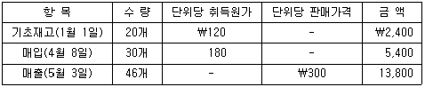
- ￦6,300
- ￦6,780
- ￦7,020
- ￦7,260
- ￦7,500
(정답률: 알수없음)
67. 20×1년 1월 1일 (주)감평은 장부상 순자산가액이 ￦460,000인 (주)대한의 보통주 70%를 현금 ￦440,000에 취득하였다. 취득일 현재 (주)대한의 자산 및 부채에 관한 장부금액과 공정가치는 건물을 제외하고 모두 일치하였다. 건물의 장부금액과 공정가치는 각각 ￦70,000과 ￦150,000이고 잔여내용연수는 10년, 잔존가치는 없고 정액법으로 상각한다. (주)대한은 20×1년도 당기순이익으로 ￦120,000을 보고하였으며, 이를 제외하면 20×1년 자본의 변동은 없다. 20×1년 말 연결재무제표에 기록될 비지배지분은? (단, 비지배지분은 종속기업의 식별가능한 순자산의 공정가치에 비례하여 측정한다.)
- ￦33,600
- ￦138,000
- ￦162,000
- ￦171,600
- ￦195,600
(정답률: 알수없음)
68. (주)감평의 20×1년도 매출 및 매출채권 관련 자료는 다음과 같다. 20×1년 고객으로부터의 현금유입액은? (단, 매출은 전부 외상으로 이루어진다.)
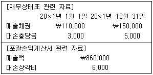
- ￦812,000
- ￦816,000
- ￦854,000
- ￦890,000
- ￦892,000
(정답률: 알수없음)
69. 충당부채와 우발부채에 관한 설명으로 옳지 않은 것은?
- 충당부채를 인식하기 위해서는 당해 의무를 이행하기 위하여 경제적효익을 갖는 자원이 유출될 가능성이 매우 높아야 한다.
- 우발부채는 경제적효익을 갖는 자원의 유출을 초래할 현재의무가 있는지의 여부가 아직 확인되지 아니한 잠재적 의무이므로 부채로 인식하지 않는다.
- 재무제표는 미래 시점의 예상 재무상태가 아니라 보고기간말의 재무상태를 표시하는 것이므로, 미래영업을 위하여 발생하게 될 원가에 대하여는 충당부채를 인식하지 않는다.
- 충당부채로 인식되기 위해서는 과거사건으로 인한 의무가 기업의 미래행위(즉, 미래 사업행위)와 독립적이어야 한다.
- 상업적 압력 때문에 공장에 특정 정화장치를 설치하기 위한 비용지출을 계획하고 있는 경우 공장운영방식을 바꾸는 등의 미래행위를 통하여 미래의 지출을 회피할 수 있으므로 당해 지출은 현재의무가 아니며 충당부채도 인식하지 아니한다.
(정답률: 알수없음)
70. (주)감평은 20×1년 4월 1일 건물신축을 위해 토지, 건물과 함께 기계장치를 일괄하여 ￦20,000,000(토지, 건물, 기계장치의 공정가치 비율은 5 : 3 : 2)에 취득하여 사용하고 있다. 기계장치의 잔여내용연수는 4년이고, 잔존가치는 없는 것으로 추정하였으며 연수합계법을 적용하여 감가상각한다. 기계장치와 관련하여 (주)감평이 20×1년에 인식할 감가상각비는? (단, 감가상각은 월할 계산한다.)
- ￦1,200,000
- ￦1,500,000
- ￦1,600,000
- ￦1,800,000
- ￦2,000,000
(정답률: 알수없음)
71. (주)감평의 20×6년도 생산ㆍ판매자료가 다음과 같을 때 기본원가(prime cost)는?
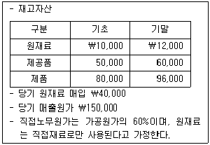
- ￦82,800
- ￦1⑤,200
- ￦120,800
- ￦132,800
- ￦138,000
(정답률: 알수없음)
72. 다음은 A제품의 20×4년과 20×5년의 생산관련 자료이며, 총고정원가와 단위당 변동원가는 일정하였다.
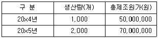
20×6년도에는 전년도에 비해 총고정원가는 20% 증가하고 단위당 변동원가는 30% 감소한다면, 생산량이 3,000개일 때 총제조원가는?
- ￦62,000,000
- ￦72,000,000
- ￦78,000,000
- ￦86,000,000
- ￦93,000,000
(정답률: 알수없음)
73. (주)감평은 활동기준원가계산에 의하여 간접원가를 배부하고 있다. 20×6년 중 고객 갑은 10회를 주문하였다. 20×6년도 간접원가 관련 자료가 다음과 같을 때, 고객 갑에게 배부될 간접원가 총액은?
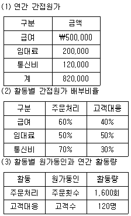
- ￦3,025
- ￦3,235
- ￦5,125
- ￦5,265
- ￦5,825
(정답률: 알수없음)
74. (주)감평은 20×6년도에 설립되었고, 당해연도에 A제품 25,000단위를 생산하여 20,000단위를 판매하였다. (주)감평의 20×6년도 A제품 관련 자료가 다음과 같을 때, 전부원가계산과 변동원가계산에 의한 20×6년도 기말재고자산의 차이는?
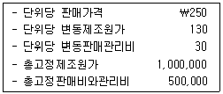
- ￦50,000
- ￦200,000
- ￦250,000
- ￦350,000
- ￦400,000
(정답률: 알수없음)
75. 다음은 (주)감평의 20×6년도 예산자료이다. 손익분기점을 달성하기 위한 A제품의 예산판매수량은? (단, 매출배합은 변하지 않는다고 가정한다.)
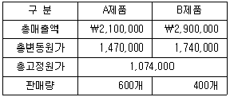
- 240개
- 300개
- 360개
- 420개
- 480개
(정답률: 알수없음)
76. (주)감평은 A, B 두 개의 사업부만 두고 있다. 투자수익률과 잔여이익을 이용하여 사업부를 평가할 때 관련 설명으로 옳은 것은? (단, 최저필수수익률은 6%라고 가정한다.)
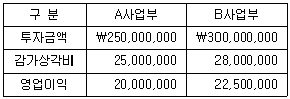
- A사업부와 B사업부의 성과는 동일하다.
- A사업부가 투자수익률로 평가하든 잔여이익으로 평가하든 더 우수하다.
- B사업부가 투자수익률로 평가하든 잔여이익으로 평가하든 더 우수하다.
- 투자수익률로 평가하는 경우 B사업부, 잔여이익으로 평가하는 경우 A사업부가 각각 더 우수하다.
- 투자수익률로 평가하는 경우 A사업부, 잔여이익으로 평가하는 경우 B사업부가 각각 더 우수하다.
(정답률: 알수없음)
77. (주)감평은 당기부터 단일의 공정을 거쳐 주산물 A, B, C와 부산물 X를 생산하고 있고 당기발생 결합원가는 ￦9,900이다. 결합원가의 배부는 순실현가치법을 사용하며, 부산물의 평가는 생산기준법(순실현가치법)을 적용한다. 주산물 C의 기말재고자산은?
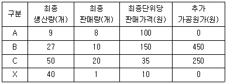
- ￦800
- ￦1,300
- ￦1,575
- ￦1,975
- ￦2,375
(정답률: 알수없음)
78. (주)감평은 표준원가계산을 적용하고 있으며, 직접노무시간을 기준으로 제조간접원가를 배부하고 있다. 고정제조간접원가 조업도차이는?
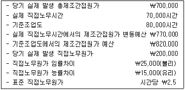
- ￦21,000(유리)
- ￦21,000(불리)
- ￦31,500(유리)
- ￦31,500(불리)
- ￦52,500(유리)
(정답률: 알수없음)
79. (주)감평의 20×6년도 제품에 관한 자료가 다음과 같을 때 안전한계율은?
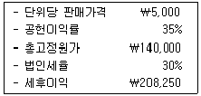
- 68%
- 70%
- 72%
- 74%
- 76%
(정답률: 알수없음)
80. (주)감평은 A제품을 주문생산하고 있다. 월간 최대 생산가능수량은 10,000개이며, 현재 7,500개를 생산ㆍ판매하고 있다. A제품의 개당 판매가격은 ￦150이며, 현재 조업도 수준하의 원가정보는 다음과 같다.
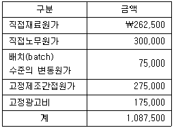
배치 수준의 변동원가는 공정초기화비용(set-up cost), 품질검사비 등을 포함하고 있으며, 1배치에 50개의 A제품을 생산할 수 있다. 최근 (주)감평은 (주)대한으로부터 A제품 2,500개를 개당 ￦120에 구매하겠다는 특별주문을 제안받았다. 이 특별주문을 수락하게 되면 배치를 조정하여 배치당 100개의 A제품을 생산하는 형식으로 변경해야 하고(배치변경에 따른 추가비용은 없음), 기존 고객들에게 개당 ￦10의 할인혜택을 부여해야 한다. 특별주문을 수락한다면 이익에 미치는 영향은?
- ￦25,000 이익
- ￦50,000 이익
- ￦25,000 손실
- ￦50,000 손실
- ￦75,000 손실
(정답률: 알수없음)